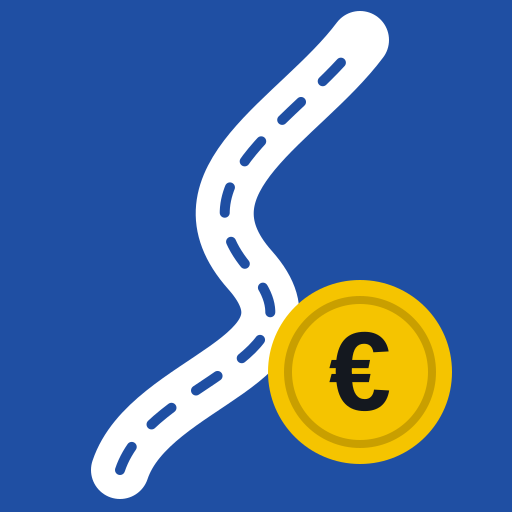

Radin routier
Temps en plus
Comment c'est calculé
- Carburant
- Consommation ville, route ou autoroute selon chaque tronçon (ville : moins de 50 km/h de moyenne), au prix du jour des stations autour du départ, ou à ton prix.
- Usure
- Ce qui s'use avec les kilomètres : pneus, freins, embrayage, pièces, décote. 7 c€/km par défaut, réglable.
- Péage
- Tarif réel au kilomètre de 40 autoroutes (APRR, AREA, VINCI), estimé pour Sanef et SAPN, prix exact de 10 ponts et tunnels (viaduc de Millau, pont de Normandie…), tarifs 2026. Ailleurs, 0,09 €/km. C'est une approximation, pas le tarif exact de la barrière.
- Temps
- Durées sans trafic.
- Anneau
- Ce que coûte ton choix : en bleu les IK (carburant et usure), en ambre la note de frais (péage), en gris ce que tu économises par rapport au plus rapide. Le même anneau est dans « Détail du prix » de chaque trajet.
- Escalier
- Les trajets vont du plus rapide au moins cher ; une marche doit faire gagner au moins 12 %, ou 5 € à 1 €/min. « Ton choix » : le moins cher dans le temps en plus accepté, si chaque pas fait gagner au moins 2 €, et au moins 1 € toutes les 3 min perdues.
Itinéraires Valhalla (serveur FOSSGIS) · adresses Photon · carte Leaflet · données © contributeurs OpenStreetMap · prix des carburants : ministère de l'Économie (Licence Ouverte) · tarifs VINCI Autoroutes publiés par la société ; tarifs APRR et AREA (Licence Ouverte) et gares de péage (ODC-BY) : data.gouv.fr · villes : Insee (Licence Ouverte) et GeoNames (CC-BY 4.0).